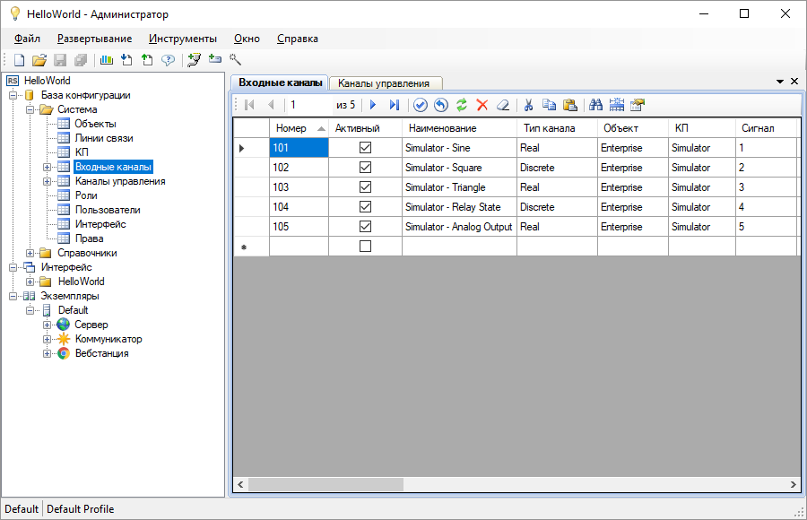

Приложение Администратор предназначено для управления конфигурацией системы (рис. 1). Настройка конфигурации производится путём редактирования таблиц базы конфигурации, которая представляет собой структурированное описание всей автоматизированной системы.

Рис. 1. Приложение Администратор
Основные возможности программы Администратор, предназначенные для быстрого создания и удобной модификации базы конфигурации: